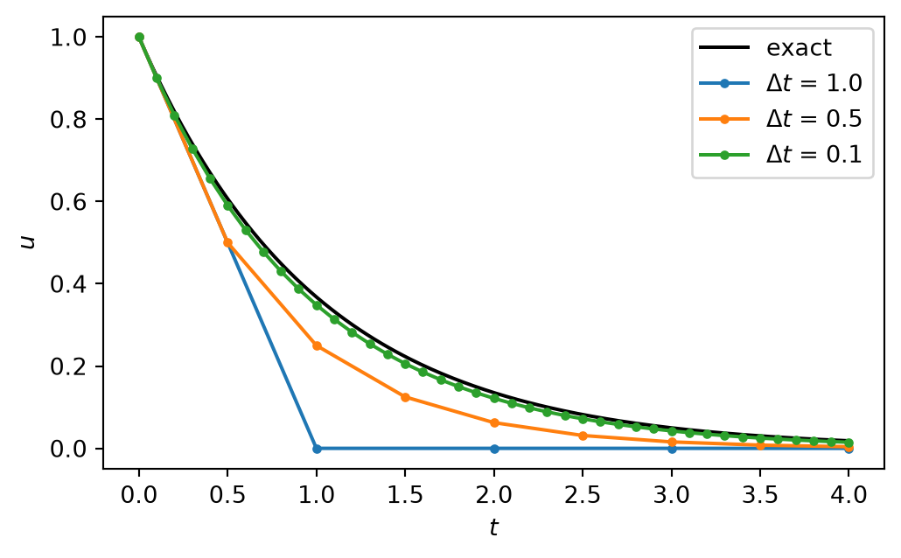

explain what a prognostic model is and how prognostic and diagnostic equations differ,
name the steps that lead from a physical law to a simulation result,
list the sources of error in a numerical model and say which of them you control,
explain round-off error and recognise loss of significance in a computation,
distinguish verification from validation.
1.1 Models of the Earth system
In this lecture we deal with prognostic modelling of the physics of the Earth and the atmosphere. Before we write down any equation, we clarify what models are for.
TipThink first: what are models good for?
Prediction. A model simulates the past and present state of a system and predicts its future state. Weather and climate models predict the future state of the atmosphere and the ocean. This is what we call prognostic modelling.
Filling gaps. Measurements of temperature, rain or water levels are never continuous in space and time, not even from satellites. Models interpolate between locations and between measurement times. Nobody can measure the future, so looking ahead always needs a model that extrapolates.
Seeing the unobservable. Models give access to variables for which no sensor exists, or which cannot be measured with the required accuracy or coverage, for example the water stored in the deep subsurface.
Virtual experiments. Models allow experiments that are impossible, too expensive or too dangerous in reality: doubling atmospheric CO2, removing a mountain range, moving an earthquake source.
Understanding. Models help to understand complex systems and their feedbacks, because every process can be switched on and off.
TipThink first: what types of models exist, and what are their strengths?
Type
Strength
Weakness
Analog (laboratory experiment)
It is real
Needs a laboratory and often much money; valid only in the range of the experiment; scaling to the real system is difficult
Statistical, including machine learning
Works without knowing the governing laws; fast once trained
Needs much data; based on assumptions that are hard to check; unreliable outside the range of the training data
Mathematical (physics-based)
Based on conservation laws, therefore able to extrapolate
Based on simplifying assumptions; parameters are often unknown at the scale of the model; needs applied mathematics and computing
This lecture treats mathematical models. The three types are increasingly combined, for example when a machine-learning model is trained on the output of a physics-based model (Chapter 22).
1.1.1 A first mathematical model
A very familiar physical model is Newton’s second law, \(m a = F\). Written as a differential equation it reads
\[
m \frac{\mathrm{d}^2 u}{\mathrm{d}t^2} = F\!\left(t, u, \frac{\mathrm{d}u}{\mathrm{d}t}\right),
\tag{1.1}\]
where \(u(t)\) is the position of a particle at time \(t\) and \(F\) is the force acting on it. Many problems in science and engineering have this form: an equation that contains one or more derivatives of an unknown function. To model the motion of the particle we have to find the function \(u(t)\) that satisfies Equation 1.1.
Throughout the lecture \(u\) denotes the unknown. Depending on the problem it is a position, a temperature, a pressure, a water depth or a vector of all of these.
1.1.2 Prognostic and diagnostic equations
A prognostic equation contains a time derivative of the unknown. It states how fast the state changes, and therefore allows us to step from the state now to the state a moment later:
A diagnostic equation contains no time derivative. It relates variables at the same instant. The ideal gas law \(p = \rho R T\) and hydrostatic balance \(\partial p / \partial z = -\rho g\) are diagnostic equations of atmospheric models.
A prognostic model consists of prognostic equations for the variables that carry the memory of the system, the state, together with diagnostic equations for everything that follows from the state. The mathematical task is an initial value problem: given the state at \(t = 0\), find the state at later times.
Model
Prognostic variables (examples)
Equations
Numerical weather prediction, climate
wind, temperature, pressure or density, humidity
conservation of momentum, energy and mass in a rotating, stratified fluid
conservation of momentum with a stress–strain relation
All these equations are derived in the same way, from the conservation of mass, momentum and energy (Chapter 2), and they are solved with the same small set of numerical methods. That is why meteorologists and geophysicists can share this lecture.
1.2 From physical law to computer code
Almost no prognostic model of a real system can be solved with pencil and paper. We have to solve it numerically, which means that a simulation result is separated from reality by a chain of steps:
Physical system. The atmosphere, an aquifer, the crust.
Conceptual model. Which processes matter, which are neglected, where the boundaries of the domain are.
Mathematical model. Differential equations with initial and boundary conditions and parameters.
Discretization. The continuous equations are replaced by algebraic equations for a finite number of unknowns.
Solution algorithm. The algebraic equations are solved, often only approximately.
Implementation. The algorithm is written as a program.
Simulation and evaluation. The program is run and its result is compared with observations.
Every step introduces errors. The lecture is mainly about steps 4 to 6, but you will only be able to judge a result if you keep the whole chain in mind.
1.2.1 The central idea: replace derivatives by differences
A computer can add, subtract, multiply and divide. It cannot differentiate. The simplest way to translate a differential equation into arithmetic is the finite difference method, which replaces a derivative by a difference quotient, for example
where \(\Delta t\) is the time step. The derivative is the limit of the right hand side for \(\Delta t \to 0\). On a computer \(\Delta t\) stays finite, and this is the origin of the discretization error.
As an example take the decay equation
\[
\frac{\mathrm{d}u}{\mathrm{d}t} = -k u, \qquad u(0) = u_0,
\tag{1.4}\]
which describes radioactive decay, the cooling of a body or the emptying of a linear reservoir. Its exact solution is \(u(t) = u_0 e^{-kt}\). We insert Equation 1.3, write \(u_n\) for the approximation of \(u(n \Delta t)\) and solve for the new value:
\[
u_{n+1} = u_n - k \, \Delta t \, u_n .
\tag{1.5}\]
This is a complete prognostic model. Starting from \(u_0\) it produces the state at all later times using only multiplication and subtraction.
import numpy as npimport matplotlib.pyplot as pltk, u0, t_end =1.0, 1.0, 4.0fig, ax = plt.subplots(figsize=(6, 3.5))t_exact = np.linspace(0, t_end, 200)ax.plot(t_exact, u0 * np.exp(-k * t_exact), "k", label="exact")for dt in [1.0, 0.5, 0.1]: n_steps =int(round(t_end / dt)) u = np.empty(n_steps +1) u[0] = u0for n inrange(n_steps): u[n +1] = u[n] - k * dt * u[n] ax.plot(dt * np.arange(n_steps +1), u, "o-", ms=3, label=rf"$\Delta t$ = {dt}") error =abs(u[-1] - u0 * np.exp(-k * t_end))print(f"dt = {dt:4.1f}: error at t = {t_end:.0f} is {error:.4f}")ax.set_xlabel("$t$")ax.set_ylabel("$u$")ax.legend()plt.show()
dt = 1.0: error at t = 4 is 0.0183
dt = 0.5: error at t = 4 is 0.0144
dt = 0.1: error at t = 4 is 0.0035

Figure 1.1: Numerical solution of the decay equation with the forward difference for three time steps, compared with the exact solution.
Figure 1.1 shows the behaviour we hope for: the smaller the time step, the closer the numerical solution is to the exact one. It also raises the questions that occupy us for the rest of the semester.
TipTry it
The code below runs in your browser. Change the time step dt and press Run Code. Try 1.5, 2.0, 2.5 and 3.0. At which value does the numerical solution stop decaying?
How fast does the error decrease when \(\Delta t\) decreases? (Accuracy)
With \(\Delta t = 1\) the numerical solution drops to zero in one step. What happens for \(\Delta t = 3\)? (Stability)
Is there a better formula than Equation 1.5 for the same cost? (Efficiency)
1.2.2 A first analysis
For this simple model the first two questions can be answered on paper. Equation 1.5 multiplies the solution by the same factor in every step, \(u_{n+1} = (1 - k \Delta t) \, u_n\). Applying it \(n\) times,
The exact solution is multiplied in every step by \(e^{-k \Delta t}\), since \(u(t + \Delta t) = u_0 e^{-k (t + \Delta t)} = e^{-k \Delta t} \, u(t)\). The Taylor series of this factor is
\[
e^{-k \Delta t} = 1 - k \Delta t + \frac{(k \Delta t)^2}{2} - \dots
\]
The numerical factor \(1 - k \Delta t\) consists of its first two terms.
Accuracy. In one step the numerical and the exact factor differ by \((k \Delta t)^2 / 2\). To reach a fixed time \(t\) we need \(n = t / \Delta t\) steps, so the errors add up to something proportional to \(n \, (k \Delta t)^2 \propto \Delta t\). The error at a fixed time is proportional to the time step: halving \(\Delta t\) halves the error.
Stability. The behaviour of \(u_n = (1 - k \Delta t)^n u_0\) depends only on the size of the factor.
Time step
Factor \(1 - k \Delta t\)
Numerical solution
\(k \Delta t < 1\)
between 0 and 1
decays monotonically, as the exact solution
\(k \Delta t = 1\)
0
zero after one step
\(1 < k \Delta t < 2\)
between \(-1\) and 0
decays, but changes sign in every step
\(k \Delta t > 2\)
below \(-1\)
oscillates and grows without bound
For \(k \Delta t > 2\) the numerical solution has nothing in common with the exact one. The scheme is unstable. The time step of this scheme is therefore limited by the fastest process in the model, not by the accuracy we want. This observation, generalised to systems and to partial differential equations, is one of the main themes of the lecture (Chapter 6).
1.3 Sources of error and uncertainty
TipThink first: which errors occur when a numerical model is developed and applied?
Collect your own list before reading on, and sort it by the step of the modelling chain at which the error arises.
The following table sorts the errors by their origin (after Wick 2020).
Origin
Error
Description
Conceptual and mathematical model
Model error
Processes are missing or simplified, for example a linear equation replaces a nonlinear one. Found only by comparison with observations and by careful reasoning.
Homogenization error
A model at full resolution is replaced by an averaged one; processes smaller than the grid are represented by parameters (parametrization, Chapter 18).
Regularization error
An ill-posed problem is modified so that it becomes well-posed.
Data
Data error
Initial conditions, boundary conditions and parameters come from measurements and are uncertain and incomplete.
Reference error
The observations used for evaluation are themselves inaccurate.
Discretization
Discretization error
Continuous functions are represented by a finite number of values.
Interpolation error
Values between grid points are obtained from simpler functions.
Solution algorithm
Iteration error
Iterative algorithms are stopped after a finite number of steps.
Computer
Round-off error
A computer represents only a finite set of numbers.
Implementation
Bugs
Some make the program abort, which is the harmless case. Others produce results that look plausible and are wrong.
Two remarks help to keep this list in proportion.
First, the errors are of very different size, and the total error is dominated by the largest contribution. If the parameters of a groundwater model are known only within a factor of ten, it is pointless to reduce the discretization error to 0.01 %. Deciding which error dominates is a central task of numerical modelling.
Second, errors in the data are of two kinds. Epistemic uncertainty comes from lack of knowledge and can in principle be reduced by more measurements. Aleatoric uncertainty comes from variability that is random for all practical purposes. Both are treated by running the model many times (Chapter 8).
Of all these errors, the discretization, iteration and round-off errors and the bugs are the ones that numerical methods control. The rest of this unit treats round-off; the discretization error is the subject of most of the following units.
1.4 Floating point arithmetic and round-off
1.4.1 How a computer stores real numbers
A computer stores a real number as a floating point number
\[
x = \pm \, m \cdot 2^{e},
\]
with a significand \(m\) and an exponent \(e\) that each occupy a fixed number of bits. Python and NumPy use by default the double precision format of the IEEE 754 standard with 64 bits, of which 53 hold the significand. This has three consequences (Goldberg 1991).
Finite precision. A double carries about 16 significant decimal digits. The distance between 1 and the next larger floating point number is the machine epsilon, \(\varepsilon = 2^{-52} \approx 2.2 \times 10^{-16}\).
Finite range. The largest double is about \(1.8 \times 10^{308}\). Larger results overflow to inf.
Most decimal fractions are not representable. In base 2 the number 0.1 has infinitely many digits, as 1/3 has in base 10, and is rounded when it is stored.
Every arithmetic operation therefore returns the exact result rounded to the nearest floating point number, with a relative error of at most \(\varepsilon / 2\). Two rules follow immediately.
Never test floating point numbers for equality. Test whether their difference is small, for example with np.isclose.
Single precision has only about 7 significant digits. Weather and climate models nevertheless increasingly use it, because it halves memory and data transfer. Whether this is safe has to be shown for each algorithm.
1.4.2 Loss of significance
A relative error of \(10^{-16}\) sounds harmless, and for a single operation it is. It becomes dangerous when two nearly equal numbers are subtracted. The leading digits cancel, and the result consists mostly of the rounding errors of the operands. Consider
x = 1e-02: naive 0.4999958333 stable 0.4999958333
x = 1e-04: naive 0.4999999970 stable 0.4999999996
x = 1e-06: naive 0.5000444503 stable 0.5000000000
x = 1e-08: naive 0.0000000000 stable 0.5000000000
For \(x = 10^{-8}\) the first formula returns 0 instead of 0.5: \(\cos x\) differs from 1 by \(5 \times 10^{-17}\), which is less than the machine epsilon, so it is stored as exactly 1. The second formula uses the identity \(1 - \cos x = 2 \sin^2(x/2)\), is mathematically identical and avoids the subtraction.
This has a direct consequence for our central idea. The difference quotient Equation 1.3 subtracts two numbers that become more and more equal as the step decreases. Making the step ever smaller therefore does not make a finite difference ever more accurate. We quantify this in Chapter 3.
1.4.3 Conditioning
Loss of significance is an example of a more general notion. A problem is well-conditioned if small relative changes of the input cause small relative changes of the result, and ill-conditioned if they cause large ones. The amplification factor is the condition number\(\kappa\).
For the evaluation of a function \(f(x)\) it follows from the Taylor series. A small change \(\delta x\) of the input changes the result by \(\delta f \approx f'(x) \, \delta x\). We divide by \(f\) and expand with \(x\) to obtain relative changes on both sides:
For \(x = 10^{-8}\) this is about \(10^{-17}\). The problem is extremely well-conditioned: a small relative error in \(x\) has almost no effect on \(f\). The failure of f_naive therefore cannot be blamed on the problem.
The algorithm.f_naive computes \(f\) in steps, and each step is a problem of its own with its own condition number. First it computes \(c = \cos x\). The result is rounded, so \(c\) carries a relative error of up to \(\varepsilon\). Then it computes \(h(c) = 1 - c\). With the same formula, now for the input \(c\),
For small \(x\) the Taylor series \(\cos x = 1 - x^2/2 + x^4/24 - \dots\) gives \(c \approx 1\) and \(1 - c = x^2/2 - x^4/24 + \dots \approx x^2/2\), hence
For \(x = 10^{-8}\) this is \(2 \times 10^{16}\). The rounding error \(\varepsilon \approx 10^{-16}\) of \(c\) is amplified to a relative error of order one: no correct digit remains. f_stable computes \(\sin(x/2)\), squares it and divides by \(x^2\). These steps have condition numbers of about 1 and 2, so the rounding errors stay at the level of \(\varepsilon\).
eps = np.finfo(float).epsprint(" x kappa problem kappa step 1-cos x predicted error actual error")for x in [1e-2, 1e-4, 1e-6, 1e-8]: kappa_f = x**2/6# the problem f c = np.cos(x) kappa_h =abs(c) /abs(1- c) if c !=1else np.inf # the step 1 - c in f_naive predicted = kappa_h * eps # bound for the relative error of f_naive actual =abs(f_naive(x) - f_stable(x)) / f_stable(x) # f_stable serves as the exact valueprint(f"{x:6.0e}{kappa_f:13.1e}{kappa_h:18.1e}{predicted:15.1e}{actual:12.1e}")
x kappa problem kappa step 1-cos x predicted error actual error
1e-02 1.7e-05 2.0e+04 4.4e-12 2.9e-13
1e-04 1.7e-09 2.0e+08 4.4e-08 5.2e-09
1e-06 1.7e-13 2.0e+12 4.4e-04 8.9e-05
1e-08 1.7e-17 inf inf 1.0e+00
The last two columns compare the error predicted by the condition number of the step \(1 - c\), \(\kappa_h \, \varepsilon\), with the actual relative error of f_naive, for which the result of f_stable serves as the exact value. The prediction is an upper bound, since the rounding error of \(\cos x\) is usually smaller than \(\varepsilon\); it lies within a factor of about 10 of the actual error. Above all, it explains why the error grows by a factor of \(10^4\) each time \(x\) shrinks by a factor of 100. For \(x = 10^{-8}\) the stored value of \(\cos x\) is exactly 1: the step \(1 - c\) has lost all information, which the infinite condition number expresses, and the relative error is 100 %.
Conditioning and stability. Conditioning is a property of the problem. It must be distinguished from the stability of an algorithm. An algorithm is unstable if it amplifies errors more than the problem itself does, typically because it contains an ill-conditioned intermediate step that the problem does not need. Here the problem is well-conditioned, f_naive is unstable because of the step \(1 - \cos x\), and f_stable is stable. For an ill-conditioned problem, in contrast, no algorithm helps; the problem itself has to be reformulated.
We meet the condition number again for linear systems of equations, where the same definition leads to the condition number of a matrix (Chapter 4, Chapter 11), and ill-conditioning in its most famous geophysical form, the limited predictability of weather (Chapter 8).
1.5 Concepts that return in every unit
A few concepts apply to all numerical methods of this lecture. We introduce them informally here and make them precise in Chapter 6.
Approximation
The exact solution \(u\) is not available. We compute an approximation \(\tilde u\) and need to know how far it is from \(u\).
Consistency
A method is consistent if the discrete equations approach the differential equation when the grid spacing and the time step go to zero.
Stability
A method is stable if errors, for example round-off errors, do not grow without bound during the computation. Unstable methods typically show oscillations that grow in time. It is therefore important to know from the physics whether oscillations are to be expected.
Convergence
A method converges if the numerical solution approaches the exact solution when the grid spacing and the time step go to zero. The rate at which it does so is the order of the method.
Efficiency
The accuracy reached for a given amount of computing time, memory and energy. A method of higher order is often, but not always, more efficient.
Well-posedness
A property of the mathematical problem: a solution exists, it is unique, and it depends continuously on the data (Chapter 2). A numerical method cannot repair a problem that is not well-posed.
Verification: are we solving the equations right? This is a mathematical question. It is answered by comparing the numerical solution with exact solutions and by checking that the error decreases at the expected rate when the grid is refined. Verification concerns discretization, algorithm and code, and it can be completed.
Validation: are we solving the right equations? This is a physical question. It is answered by comparing the simulation with observations. Validation concerns the conceptual and mathematical model and the data, and it is never complete, because a model can only be shown to agree with the observations available so far.
The order matters. A model that has not been verified cannot be validated, because agreement with observations may result from errors that compensate each other. In this lecture you verify every program you write.
1.7 Working practice
Numerical modelling is to a large part work on paper. Classifying the problem, deriving the discrete equations, and writing down the grid, the indices and the boundary conditions come first. Programming, debugging and plotting are the smaller part, and they go quickly when the paper work is complete.
The following habits save most of the time that is usually lost.
Simplify. Start with the lowest resolution, the simplest boundary and initial conditions and constant coefficients. Add one complication at a time.
Know the answer in advance. Test first on a problem with a known solution. For a linear system with five unknowns you can check every number by hand.
Write functions and test them. A function that does one thing can be tested once and then trusted: on a problem with a known answer, and again after every change. In the exercises you collect your functions in your own module toolbox.py and reuse them in later sheets and in the project.
Use version control. With git every working state of a program can be recovered, and every result can be attributed to the version of the code that produced it.
Make results reproducible. A figure should be produced by a script from the raw output, without manual steps. All figures in this script are produced by the code shown next to them.
1.8 Summary
A prognostic model predicts the future state of a system from its present state with equations that contain time derivatives. Diagnostic equations relate variables at the same time.
A simulation result is separated from reality by a chain of steps: conceptual model, mathematical model, discretization, algorithm, implementation. Each contributes errors, and the largest contribution dominates.
The basic idea of discretization is to replace derivatives by difference quotients. The resulting discretization error decreases with the step.
Floating point numbers have about 16 significant digits. Subtracting nearly equal numbers destroys most of them.
Verification checks the solution of the equations, validation checks the equations. Verification comes first.
1.9 Further reading
Durran (2010), chapter 1, for the view from atmospheric science; Goldberg (1991) for floating point arithmetic; Oberkampf and Roy (2010) for verification and validation.
Durran, Dale R. 2010. Numerical Methods for Fluid Dynamics: With Applications to Geophysics. 2nd ed. Springer.
Goldberg, David. 1991. “What Every Computer Scientist Should Know about Floating-Point Arithmetic.”ACM Computing Surveys 23 (1): 5–48.
Oberkampf, William L., and Christopher J. Roy. 2010. Verification and Validation in Scientific Computing. Cambridge University Press.
Wick, Thomas. 2020. Numerical Methods for Partial Differential Equations. Leibniz Universität Hannover.